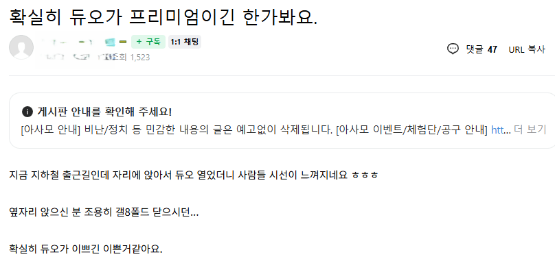

아이폰 듀오로 옆자리 폴드8 접게 한썰
댓글
거 뭐 3억짜리 기계도 아니고 꼴랑 저걸로 우월감을 ㅋㅋㅋ
ㄹㅇㅋㅋ 누가보면 3억짜리 휴대폰인줄알았어
듀하하하하ㅏ하하핳

진짜 안쪽팔릴까..
단순 비난글보다 이런 프레임 씌워지는게 더 무섭긴함
1억 2억짜리 비싼 차 가지고 자랑하는거면 꼴보긴 싫지만 이해는 하겠는데 꼴랑 몇백짜리 폰가지고 저정도 우월감 가질일이냐? ㅋㅋㅋㅋㅋㅋㅋㅋ
저번에 삼엽충들 맞을때도 아이폰 빨면서 저러던 애들천지였어서 프레임으로는 안보임
ㅋㅋㅋㅋ
힌지 문제때문에 금가있어서 시선 꽂힌거아냐?
내가 엔진 뒤에달린차 타는데 이거 뽕도 3달이면 꺼지는데...ㅋㅋ
진짜 개븅신같다 ㅋㅋㅋㅋㅋㅋㅋㅋㅋㅋㅋㅋㅋ
애플쓰는 애들 글들은 왜 저모양임
스마트폰따위에 자아의탁 하는게 ㄹㅇ병신같음
군대도안갔다온20살아무나데려와도 문제없이 개통할수있는 핸드폰하나가지고 ㅋㅋㅋ
인생 최대업적..
옆자리 폴드8을 자꾸 힐끔힐끔 쳐다보면서 관음하니까 닫았겠지
어디서 자꾸 이런 글이 올라오는거임
?ㅋㅋㅋㅋ
아사모는 아이폰을 병신같이 사모하는 모임 임
와아 쉰내......
힌지 ㅄ력 옮을까봐 닫은갑네
뭔 장인이 하이퍼카 만들듯 하는것도 아니고
고작 몇백따리에 더러는건 어그로 아니면 찐 정병일텐데
ㅋㅋㅋ닫을때돼서 닫았겠지ㅋㅋㅋㅋㅋ
뭐 병신양아치 눈싸움 하는 것도 아니고
깨갱하면서 접냐고 보던걸 ㅋㅋㅋㅋㅋ병신인가
이러니깐 사과까기들이 나타나지ㅋㅋㅋㅋㅋ
진짜 뱅신같은 우월감 진짜 ㅋㅋㅋ